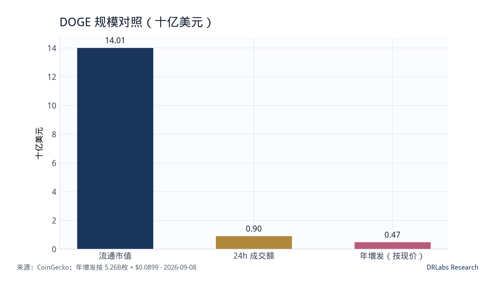
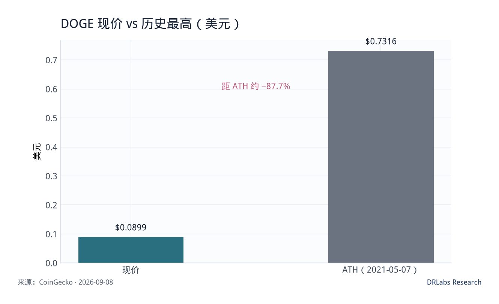
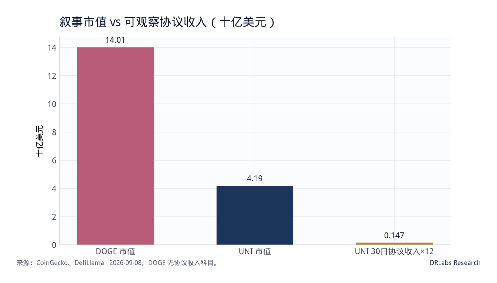

发布 2026年9月9日 · 数据 2026年9月8日 21:27 UTC · DOGE · 4.7 / 10Published 9 Sep 2026 · as-of 8 Sep 2026 21:27 UTC · DOGE · 4.7 / 10公開 2026年9月9日 · 基準 2026年9月8日 21:27 UTC · DOGE · 4.7 / 10게시 2026년 9월 9일 · 기준 2026년 9월 8일 21:27 UTC · DOGE · 4.7 / 10Publication 9 sept. 2026 · as-of 8 sept. 2026 21:27 UTC · DOGE · 4.7 / 10Publicado 9 sep 2026 · as-of 8 sep 2026 21:27 UTC · DOGE · 4.7 / 10Публикация 9 сен 2026 · as-of 8 сен 2026 21:27 UTC · DOGE · 4.7 / 10
研究结论
Research take
リサーチ結論
리서치 결론
Conclusion
Conclusión
Вывод
Dogecoin 是支付叙事与迷因品牌的混合体，不是有费用分成的协议代币。以 2026 年 9 月 8 日 21:27 UTC 计，DOGE 约 0.0899 美元，流通市值约 140.1 亿美元，市值排名 第 12；流通量约 1558.4 亿枚，与现量几乎重合，没有硬顶。24 小时成交约 9.02 亿美元，成交/市值约 6.4%，CEX 深度足够让大额资金进出。价格仍较 2021 年 5 月 7 日 ATH 0.7316 美元 低约 87.7%；近 30 日约 +27.4%，7 日约 +9.5%。
Dogecoin is a payments meme, not a fee-sharing protocol token. As of 21:27 UTC on 8 Sep 2026, DOGE is about $0.0899, circulating market cap about $14.01B, rank 12. Supply is about 155.84B, almost equal to total supply, with no hard cap. 24h volume is about $902M, volume / cap about 6.4% — deep enough for size. The price is still about 87.7% below the 7 May 2021 ATH of $0.7316. 30-day return about +27.4%, 7-day about +9.5%.
Dogecoinは支払いナラティブとミームブランドの混合であり、手数料分配のプロトコルトークンではない。2026年9月8日21:27 UTC時点でDOGEは約 0.0899ドル、時価総額約 140.1億ドル、順位は 12位。流通は約 1558.4億枚で総量とほぼ一致し、ハードキャップはない。24時間出来高は約 9.02億ドル、出来高/時価は約 6.4%で、大口の出入りは可能。価格は2021年5月7日ATH 0.7316ドルから約 87.7%安い。30日約 +27.4%、7日約 +9.5%。
Dogecoin은 결제 서사와 밈 브랜드의 혼합이지, 수수료를 나누는 프로토콜 토큰이 아니다. 2026년 9월 8일 21:27 UTC 기준 DOGE는 약 0.0899달러, 유통 시총 약 140.1억 달러, 순위 12위. 유통량 약 1558.4억 개로 총량과 거의 같고 하드캡이 없다. 24시간 거래대금 약 9.02억 달러, 거래대금/시총 약 6.4%로 큰 자금의 출입이 가능하다. 가격은 2021년 5월 7일 ATH 0.7316달러보다 약 87.7% 낮다. 30일 약 +27.4%, 7일 약 +9.5%.
Dogecoin est un mème de paiement, pas un jeton de protocole qui partage des frais. Au 8 sept. 2026, 21:27 UTC, DOGE vaut environ 0,0899 $, capitalisation circulante d’environ 14,01 Md$, rang 12. Offre d’environ 155,84 Md, presque égale au total, sans plafond dur. Volume 24 h d’environ 902 M$, volume / cap ~6,4% — assez profond pour la taille. Le prix reste ~87,7% sous l’ATH du 7 mai 2021 à 0,7316 $. 30 jours ~+27,4%, 7 jours ~+9,5%.
Dogecoin es un meme de pagos, no un token de protocolo que reparte comisiones. Al 8 sep 2026, 21:27 UTC, DOGE vale unos 0,0899 $, capitalización circulante unos 14.010 M$, rango 12. Oferta unos 155.840 M, casi igual al total, sin tope duro. Volumen 24 h unos 902 M$, volumen / cap ~6,4% — bastante profundo para tamaño. El precio sigue ~87,7% bajo el ATH del 7 may 2021 de 0,7316 $. 30 días ~+27,4%, 7 días ~+9,5%.
Dogecoin — платёжный мем, не протокол-токен с дележом комиссий. На 8 сен 2026, 21:27 UTC, DOGE около $0,0899, капитализация в обращении около $14,01 млрд, место 12. Предложение около 155,84 млрд, почти равно общему, без жёсткого потолка. Оборот 24 ч около $902 млн, оборот / кап ~6,4% — достаточно глубоко для размера. Цена всё ещё ~87,7% ниже ATH 7 мая 2021 $0,7316. За 30 дней ~+27,4%, за 7 дней ~+9,5%.
基本面一侧几乎是空的。DOGE 没有 DefiLlama 意义上的协议 TVL，也没有可资本化的协议收入。按公开出块规则，约每分钟 1 万枚，年增发约 52.6 亿枚，约合现价 4.7 亿美元，对现量的通胀率约 3.4%。把 140 亿美元市值拿去对 UNI 年化协议收入（约 1.47 亿美元）对照，错位立刻出现：迷因可以交易，但不能用现金流框架去抬分。
The fundamental side is almost empty. There is no DefiLlama protocol TVL and no capitalizable protocol revenue. At the public issuance rule of about 10,000 coins a minute, annual issuance is about 5.26B coins, about $473M at the current print, or about 3.4% inflation on the float. Put a $14B meme cap next to UNI’s annualized protocol revenue (~$147M) and the mismatch is the point: memes can trade. They do not get a cash-flow score.
ファンダメンタル側はほぼ空だ。DefiLlamaの意味でのプロトコルTVLも、資本化可能なプロトコル収入もない。公開の発行規則（約1分あたり1万枚）では年発行約 52.6億枚、現値で約 4.73億ドル、流通に対するインフレは約 3.4%。140億ドルのミーム時価をUNIの年率プロトコル収入（約1.47億ドル）の横に置くと、ズレが論点になる。ミームは取引できる。キャッシュフロー得点は与えない。
펀더멘털 쪽은 거의 비어 있다. DefiLlama 의미의 프로토콜 TVL도, 자본화 가능한 프로토콜 수입도 없다. 공개 발행 규칙(분당 약 1만 개)이면 연 발행 약 52.6억 개, 현가 약 4.73억 달러, 유통 대비 인플레 약 3.4%. 140억 달러 밈 시총을 UNI 연율 프로토콜 수입(약 1.47억 달러) 옆에 두면 어긋남이 포인트다. 밈은 거래할 수 있다. 현금흐름 점수는 주지 않는다.
Le côté fondamental est presque vide. Pas de TVL protocole DefiLlama, pas de revenu protocole capitalisable. À la règle publique d’environ 10 000 pièces par minute, l’émission annuelle est d’environ 5,26 Md de pièces, ~473 M$ au cours actuel, soit ~3,4% d’inflation sur le float. Placer 14 Md$ de mème à côté du revenu protocole annualisé d’UNI (~147 M$) est le point : les mèmes se négocient. Ils n’ont pas de score de flux.
El lado fundamental está casi vacío. No hay TVL de protocolo DefiLlama ni ingreso de protocolo capitalizable. Con la regla pública de unos 10.000 monedas por minuto, la emisión anual es unos 5.260 M de monedas, ~473 M$ al precio actual, ~3,4% de inflación sobre el float. Poner 14.000 M$ de meme junto al ingreso de protocolo anualizado de UNI (~147 M$) es el punto: los memes se negocian. No reciben nota de flujo.
Фундаментальная сторона почти пуста. Нет протокол-TVL в смысле DefiLlama и нет капитализируемого дохода протокола. По открытому правилу около 10 000 монет в минуту годовая эмиссия около 5,26 млрд монет, ~$473 млн по текущей цене, ~3,4% инфляции к обращению. Поставить $14 млрд мем-капа рядом с годовым доходом протокола UNI (~$147 млн) — в этом и смысл: мемы торгуются. Балл денежного потока им не ставят.
买入评分 4.7 / 10（回避）。 4.7 是基本面分，不是对盘面方向的预测。流动性好不等于值得用研究仓位去持有。本文不是卖出指令，更不是买入建议。
Buy score 4.7 / 10 (avoid). 4.7 is a fundamentals score, not a tape forecast. Liquidity is not a reason to hold it as a research position. This is not a sell order and not a buy recommendation.
買いスコア 4.7 / 10（回避）。 4.7はファンダメンタル点であり、相場予測ではない。流動性が高いことは、リサーチポジションとして持つ理由にならない。売り指図でも買い推奨でもない。
매수 점수 4.7 / 10(회피). 4.7은 펀더멘털 점수이지 방향 예측이 아니다. 유동성이 좋다는 것은 리서치 포지션으로 들고 갈 이유가 아니다. 매도 지시도, 매수 권고도 아니다.
Score d’achat 4,7 / 10 (éviter). 4,7 est un score de fondamentaux, pas une prévision de bande. La liquidité n’est pas une raison d’en faire une position de recherche. Ce n’est ni un ordre de vente ni une recommandation d’achat.
Nota de compra 4,7 / 10 (evitar). 4,7 es una nota de fundamentales, no un pronóstico de cinta. La liquidez no es motivo para tenerlo como posición de investigación. No es una orden de venta ni una recomendación de compra.
Балл покупки 4,7 / 10 (избегать). 4,7 — фундаментальный балл, не прогноз ленты. Ликвидность — не причина держать это как исследовательскую позицию. Это не ордер на продажу и не рекомендация покупать.
数据快照（2026-09-08）
Snapshot (2026-09-08)
スナップショット (2026-09-08)
스냅샷 (2026-09-08)
Instantané (2026-09-08)
Instantánea (2026-09-08)
Снимок (2026-09-08)
| 指标 Metric | 数值 Value | 口径 Source |
|---|---|---|
| DOGE 价格 DOGE price | ≈ $0.0899 | CoinGecko |
| 流通市值 / FDV Circulating mcap / FDV | ≈ $14.01B / $14.01B | 无硬顶，FDV≈市值 No hard cap; FDV ≈ mcap |
| 流通量 / 总量 / 上限 Circulating / total / max | 155.84B / 155.84B / 无 155.84B / 155.84B / none | CoinGecko |
| 市值排名 Market-cap rank | 12 | CoinGecko |
| 距 ATH Distance to ATH | ATH $0.7316（2021-05-07），约 −87.7% ATH $0.7316 (7 May 2021), about −87.7% | CoinGecko |
| 7 日 / 30 日涨跌 7d / 30d | +9.5% / +27.4% | CoinGecko |
| 24h 成交额 24h volume | ≈ $902M | CoinGecko |
| 成交 / 市值 Volume / mcap | ≈ 6.4% | 24h vol / mcap |
| 年增发（枚 / 美元） Annual issuance (coins / USD) | ≈ 5.26B / ≈ $473M | 1 万枚/分钟 × 现价 10k per minute × spot |
| 年通胀率（对现量） Annual inflation vs float | ≈ 3.4% | 增发 / 流通 issuance / circulating |
| 协议收入 Protocol revenue | 无此科目 None | 不是费用协议 Not a fee protocol |
数据时区按快照时刻 UTC。年增发按公开的 1 分钟出块、每块 1 万枚估算，实际会随出块间隔微调，不改变「永续通胀、无硬顶」的结论。
Timezone is the UTC snapshot. Annual issuance uses the public 1-minute block and 10,000 DOGE per block. Interval jitter does not change the conclusion: perpetual inflation, no hard cap.
時点はUTCスナップショット。年発行は公開の1分ブロック、1ブロック1万DOGE。間隔のブレは「永続インフレ、ハードキャップなし」を変えない。
시점은 UTC 스냅샷. 연 발행은 공개 1분 블록, 블록당 1만 DOGE. 간격 흔들림은 ‘영구 인플레, 하드캡 없음’을 바꾸지 않는다.
Fuseau : instantané UTC. L’émission annuelle utilise le bloc public d’une minute et 10 000 DOGE par bloc. Le jitter d’intervalle ne change pas la conclusion : inflation perpétuelle, pas de plafond dur.
Zona horaria: instantánea UTC. La emisión anual usa el bloque público de un minuto y 10.000 DOGE por bloque. El jitter de intervalo no cambia la conclusión: inflación perpetua, sin tope duro.
Часовой пояс — снимок UTC. Годовая эмиссия считает открытый минутный блок и 10 000 DOGE на блок. Дрожание интервала не меняет вывод: вечная инфляция, без жёсткого потолка.
流动性：第十二名是真的，研究仓位不是
Liquidity: rank 12 is real, a research book is not
流動性：12位は本物、リサーチ簿は違う
유동성: 12위는 진짜고, 리서치 북은 아니다
Liquidité : le rang 12 est réel, un livre de recherche ne l’est pas
Liquidez: el puesto 12 es real, un libro de investigación no lo es
Ликвидность: 12-е место реально, исследовательская книга — нет
DOGE 的质量几乎全部来自流动性与品牌记忆。市值第 12、24 小时成交约 9 亿美元，意味着它可以作为交易工具存在：滑点可控、进出容易、社交识别成本接近零。对交易台，这是优点。对研究台，这只证明「买得进、卖得出」，不证明「持有能积累剩余索取权」。
Almost all of DOGE’s quality is liquidity and brand memory. Rank 12 and about $900M of 24h volume mean it can exist as a trading tool: tolerable slippage, easy exits, near-zero recognition cost. That is a virtue for a trading desk. For a research desk it only proves you can get in and out. It does not prove you accumulate a residual claim.
DOGEの質のほとんどは流動性とブランド記憶である。12位と24時間約 9億ドルは、取引ツールとして存在できることを意味する。スリッページは許容でき、退出は容易で、認知コストはほぼゼロ。取引デスクには美点。リサーチデスクには「出入りできる」ことしか示さない。残余請求権の蓄積は示さない。
DOGE 품질의 거의 전부는 유동성과 브랜드 기억이다. 12위와 24시간 약 9억 달러는 거래 도구로 존재할 수 있음을 뜻한다. 슬리피지는 감당되고, 탈출은 쉽고, 인지 비용은 거의 0. 트레이딩 데스크에는 장점. 리서치 데스크에는 ‘들어가고 나올 수 있다’만 증명한다. 잔여 청구권의 축적은 증명하지 않는다.
Presque toute la qualité de DOGE est liquidité et mémoire de marque. Rang 12 et ~900 M$ de volume 24 h veulent dire qu’il peut exister comme outil de trading : slippage tenable, sorties faciles, coût de reconnaissance quasi nul. Vertu pour un desk de trading. Pour un desk de recherche, cela prouve seulement qu’on entre et qu’on sort. Pas qu’on accumule une créance résiduelle.
Casi toda la calidad de DOGE es liquidez y memoria de marca. Puesto 12 y ~900 M$ de volumen 24 h significan que puede existir como herramienta de trading: deslizamiento tolerable, salidas fáciles, coste de reconocimiento casi cero. Virtud para un desk de trading. Para un desk de investigación solo prueba que se entra y se sale. No que se acumula un derecho residual.
Почти всё качество DOGE — ликвидность и память бренда. 12-е место и ~$900 млн оборота за 24 ч значат, что это может жить как торговый инструмент: терпимое проскальзывание, лёгкий выход, почти нулевая цена узнавания. Для торгового стола это плюс. Для исследовательского — только доказательство, что можно войти и выйти. Не то, что накапливается остаточное требование.
近 30 日 +27%、7 日 +9.5%，与同期风险资产的反弹同向，不能单独解读成基本面改善。ATH 仍在 2021 年 5 月，现价只有当时的约 八分之一。把「曾经到过 0.73 美元」写成目标价，是用历史极值代替机制。
The 30-day +27% and 7-day +9.5% moved with the same risk-on bounce as other beta. That is not a fundamental upgrade. The ATH is still May 2021; spot is about one-eighth of that print. Treating “it once traded $0.73” as a target replaces mechanism with an extreme.
30日+27%、7日+9.5%は他のベータと同じリスクオン戻りであり、ファンダメンタル改善ではない。ATHは2021年5月のまま。現値はその約 8分の1。「かつて0.73ドル」を目標にするのは、メカニズムを極端値で置き換えることだ。
30일 +27%, 7일 +9.5%는 다른 베타와 같은 위험선호 반등이며 펀더멘털 개선이 아니다. ATH는 여전히 2021년 5월. 현가는 그때의 약 8분의 1. ‘한때 0.73달러’를 목표로 쓰면 메커니즘을 극값으로 바꾼다.
Le +27% sur 30 jours et +9,5% sur 7 jours ont bougé avec le même rebond risk-on que les autres bêta. Ce n’est pas une hausse fondamentale. L’ATH est toujours mai 2021 ; le spot est environ un huitième de ce print. Traiter « il a valu 0,73 $ » comme cible remplace le mécanisme par un extrême.
El +27% a 30 días y +9,5% a 7 días se movieron con el mismo rebote risk-on que otros betas. No es una mejora fundamental. El ATH sigue en mayo 2021; el spot es unos un octavo de ese print. Tratar «llegó a 0,73 $» como objetivo sustituye el mecanismo por un extremo.
+27% за 30 дней и +9,5% за 7 дней шли с тем же risk-on отскоком, что и прочая бета. Это не фундаментальный апгрейд. ATH всё ещё май 2021; спот — около одной восьмой того принта. Считать «когда-то было $0,73» целью — подменять механизм экстремумом.

供应：没有上限，通胀是设计
Supply: no cap, inflation is the design
供給：上限なし、インフレが設計
공급: 상한 없음, 인플레가 설계
Offre : pas de plafond, l’inflation est le design
Oferta: sin tope, la inflación es el diseño
Предложение: нет потолка, инфляция — конструкция
DOGE 与比特币不同，没有减半后的硬顶。按现量计算的 FDV 与市值重合，不是因为「已经完全稀释」，而是因为模型里不存在终局供给。每年新增约 52.6 亿枚，对 1558 亿枚现量大约 3.4%。3.4% 本身不算极端，但它是永续的：持有人必须持续有新的叙事需求来吸收增发。
Unlike bitcoin, DOGE has no post-halving hard cap. FDV equals market cap not because dilution is finished, but because the model has no terminal supply. About 5.26B new coins a year on 155.8B is about 3.4%. 3.4% is not extreme. It is perpetual. Holders need a steady narrative bid to absorb issuance.
ビットコインと違い、DOGEに半減後のハードキャップはない。FDVが時価と一致するのは希薄化が終わったからではなく、終局供給がないから。年約 52.6億枚、流通 1558億枚に対し約 3.4%。3.4%は極端ではない。永続する。保有者は発行を吸収するナラティブ需要を継続的に必要とする。
비트코인과 달리 DOGE에는 반감 후 하드캡이 없다. FDV가 시총과 같은 것은 희석이 끝나서가 아니라 종국 공급이 없어서다. 연 약 52.6억 개, 유통 1558억 개 대비 약 3.4%. 3.4%는 극단이 아니다. 영구적이다. 보유자는 발행을 흡수할 서사 수요를 계속 필요로 한다.
Contrairement au bitcoin, DOGE n’a pas de plafond dur après halving. FDV = cap non parce que la dilution est finie, mais parce que le modèle n’a pas d’offre terminale. Environ 5,26 Md de nouvelles pièces par an sur 155,8 Md font ~3,4%. 3,4% n’est pas extrême. C’est perpétuel. Les détenteurs ont besoin d’une demande narrative continue pour absorber l’émission.
A diferencia de bitcoin, DOGE no tiene tope duro tras el halving. FDV = cap no porque la dilución haya terminado, sino porque el modelo no tiene oferta terminal. Unos 5.260 M de monedas nuevas al año sobre 155.800 M son ~3,4%. 3,4% no es extremo. Es perpetuo. Los tenedores necesitan una demanda narrativa continua para absorber la emisión.
В отличие от биткоина, у DOGE нет жёсткого потолка после халвинга. FDV равен капу не потому что размытие закончено, а потому что в модели нет конечного предложения. Около 5,26 млрд новых монет в год на 155,8 млрд — это ~3,4%. 3,4% не экстремум. Это вечно. Держателям нужен постоянный нарративный спрос, чтобы поглощать эмиссию.
对研究框架，这意味着「代币经济」一项不能给到中性以上。没有协议金库、没有回购、没有费用销毁来对冲增发。支付叙事可以降低摩擦，但不能把通胀写成通缩。
In this framework, token economics cannot clear a neutral score. There is no protocol treasury buyback or fee burn to offset issuance. A payments story can lower friction. It cannot relabel inflation as deflation.
この枠ではトークン経済を中立以上にできない。発行を相殺するトレジャリー買い戻しや手数料バーンはない。支払い物語は摩擦を下げられる。インフレをデフレとは書けない。
이 프레임에서 토큰 경제는 중립 이상을 줄 수 없다. 발행을 상쇄할 트레저리 매입이나 수수료 소각이 없다. 결제 이야기는 마찰을 낮출 수 있다. 인플레를 디플레로 쓸 수는 없다.
Dans ce cadre, l’économie du jeton ne peut pas passer au-dessus de neutre. Pas de rachat de trésorerie ni de burn de frais pour compenser. Un récit de paiement peut réduire la friction. Il ne peut pas relabeler l’inflation en déflation.
En este marco, la economía del token no puede pasar de neutro. No hay recompra de tesorería ni quema de comisiones que compense. Una historia de pagos puede bajar la fricción. No puede relabelar inflación como deflación.
В этой рамке экономика токена не может выйти выше нейтрали. Нет байбека казны и сжигания комиссий в зачёт эмиссии. Платёжная история может снизить трение. Она не может переименовать инфляцию в дефляцию.

与现金流资产对照：同一套框架，必须打出不同的分
Against cash-flow assets: same framework, different score
キャッシュフロー資産との対照：同じ枠、違う点
현금흐름 자산과 대조: 같은 프레임, 다른 점수
Face aux actifs à flux : même cadre, autre note
Frente a activos con flujo: mismo marco, otra nota
Против денежных потоков: та же рамка, другой балл
把 DOGE 的 140 亿美元市值、UNI 的 42 亿美元市值，以及 UNI 近 30 日协议收入年化（约 1.47 亿美元）放在同一张图上，目的不是羞辱迷因，而是防止框架作弊。UNI 至少有可观察的费用与收入科目；DOGE 没有。若两篇报告都打出 6.5 以上的「谨慎跟踪」，评分就变成装饰。
Putting DOGE’s $14B cap, UNI’s $4.2B cap and UNI’s annualized 30-day protocol revenue (~$147M) on one chart is not a sneer at memes. It stops the framework from cheating. UNI at least has observable fees and revenue. DOGE does not. If both notes printed 6.5+ “cautious watch”, the score would be decoration.
DOGEの140億ドル、UNIの42億ドル、UNIの30日プロトコル収入の年率（約1.47億ドル）を一枚に置くのはミームを嘲るためではない。枠の不正を防ぐためだ。UNIには観察可能な手数料と収入がある。DOGEにはない。両方が6.5以上の「慎重ウォッチ」なら、スコアは装飾になる。
DOGE 140억, UNI 42억, UNI 30일 프로토콜 수입 연율(약 1.47억 달러)을 한 장에 놓는 것은 밈을 조롱하려는 것이 아니다. 프레임 부정행위를 막기 위해서다. UNI에는 관찰 가능한 수수료와 수입이 있다. DOGE에는 없다. 두 노트가 모두 6.5 이상 ‘신중 추적’이면 점수는 장식이 된다.
Mettre la cap DOGE de 14 Md$, la cap UNI de 4,2 Md$ et le revenu protocole annualisé d’UNI (~147 M$) sur un graphique n’est pas une moquerie. Cela empêche le cadre de tricher. UNI a au moins des frais et un revenu observables. DOGE n’en a pas. Si les deux notes imprimaient 6,5+ « suivi prudent », le score serait décoratif.
Poner la cap DOGE de 14.000 M$, la cap UNI de 4.200 M$ y el ingreso de protocolo anualizado de UNI (~147 M$) en un gráfico no es burlarse del meme. Evita que el marco haga trampa. UNI al menos tiene comisiones e ingreso observables. DOGE no. Si ambas notas imprimieran 6,5+ «seguimiento cauto», la nota sería decoración.
Ставить кап DOGE $14 млрд, кап UNI $4,2 млрд и годовой доход протокола UNI (~$147 млн) на один график — не насмешка над мемами. Это чтобы рамка не жульничала. У UNI хотя бы есть наблюдаемые комиссии и доход. У DOGE нет. Если обе записки напечатают 6,5+ «осторожное наблюдение», балл станет украшением.
DRLabs 覆盖 Meme，是为了把它写清楚，不是为了把它包装成价值投资。迷因可以有交易价值、社交价值和极端尾部期权；这些不进入买入评分的「收入」与「代币经济」高分档。
DRLabs covers memes to write them plainly, not to dress them as value. A meme can have trading value, social value and a fat tail. Those do not earn high marks in revenue or token economics.
DRLabsがミームを扱うのは、価値投資に装うためではなく、はっきり書くためだ。ミームには取引価値、社会価値、太いテールがあり得る。収入とトークン経済の高得点には入らない。
DRLabs가 밈을 다루는 것은 가치 투자로 포장하려는 것이 아니라 분명하게 쓰기 위해서다. 밈에는 거래 가치, 사회 가치, 두꺼운 꼬리가 있을 수 있다. 수입과 토큰 경제의 고점수는 주지 않는다.
DRLabs couvre les mèmes pour les écrire clairement, pas pour les habiller en value. Un mème peut avoir une valeur de trading, une valeur sociale et une queue épaisse. Cela n’obtient pas de hauts scores en revenu ou en économie de jeton.
DRLabs cubre memes para escribirlos con claridad, no para vestirlos de value. Un meme puede tener valor de trading, valor social y una cola gruesa. Eso no gana notas altas en ingreso o economía de token.
DRLabs покрывает мемы, чтобы писать их прямо, не чтобы одевать в value. У мема могут быть торговая ценность, социальная ценность и толстый хвост. Это не даёт высоких баллов в доходе и экономике токена.

买入评分 4.7 / 10
Buy score 4.7 / 10
買いスコア 4.7 / 10
매수 점수 4.7 / 10
Score d’achat 4,7 / 10
Nota de compra 4,7 / 10
Балл покупки 4,7 / 10
| 维度 Factor | 权重 Weight | 单项 Score | 加权 Weighted | 要点 Note |
|---|---|---|---|---|
| 市场地位与流动性 Market position & liquidity | 20% | 8.4 | 1.68 | 市值第 12，CEX 深度与辨识度极高 Rank 12; deep CEX books and instant recognition |
| 收入与费用捕获 Revenue & fee capture | 15% | 2.0 | 0.30 | 无协议费用、无持有人分成 No protocol fees, no holder take |
| 代币经济与估值 Token economics & valuation | 15% | 3.4 | 0.51 | 无硬顶，年通胀约 3.4% No hard cap; ~3.4% annual inflation |
| 产品与技术演进 Product & tech path | 15% | 4.0 | 0.60 | 支付可用，不是协议迭代驱动 Payments work; not protocol-iteration led |
| 竞争格局 Competitive landscape | 15% | 5.2 | 0.78 | 最老迷因品牌，后来者仍在分流注意力 Oldest meme brand; newer names still steal attention |
| 风险与治理 Risk & governance | 10% | 3.6 | 0.36 | 名人、社媒与叙事半衰期 Celebrity, social media, narrative half-life |
| 增长期权 Growth options | 10% | 4.4 | 0.44 | 支付与注意力期权存在，但不可复核为现金流 Payments and attention options exist; not checkable cash flow |
| 合计 Total | 100% | 4.67 | 回避 Avoid |
4.7 低于 5.0 的「观望」线。含义是：研究台不建议把它当作基本面持仓。若只做短线交易，那是另一套风控，不在本评分里加分。向上打开需要看到可复核的销毁/费用捕获，或通胀规则被社区实质改写；向下则是叙事退潮叠加永续增发。
4.7 sits below the 5.0 hold line. The desk does not treat this as a fundamental book. Short-term trading is a different risk process and does not add points here. Upside needs checkable burns or fee capture, or a real rule change on issuance. Downside is a narrative ebb plus perpetual issuance.
4.7は5.0の様子見線を下回る。リサーチデスクはファンダメンタル簿として扱わない。短期取引は別のリスク過程であり、ここでは加点しない。上方向は検証可能なバーンや手数料捕獲、または発行規則の実質変更が必要。下方向はナラティブ退潮と永続発行。
4.7은 5.0 관망선 아래다. 리서치 데스크는 펀더멘털 북으로 보지 않는다. 단기 거래는 다른 리스크 과정이며 여기서 가점하지 않는다. 상향은 검증 가능한 소각·수수료 포획 또는 발행 규칙의 실질 변경이 필요하다. 하향은 서사 퇴조와 영구 발행.
4,7 est sous la ligne d’attente à 5,0. Le desk ne le traite pas comme un livre fondamental. Le trading court terme est un autre processus de risque et n’ajoute pas de points ici. Le haut exige burns ou capture de frais vérifiables, ou un vrai changement de règle d’émission. Le bas est un reflux narratif plus l’émission perpétuelle.
4,7 queda bajo la línea de espera de 5,0. El desk no lo trata como libro fundamental. El trading de corto es otro proceso de riesgo y no suma puntos aquí. El alza exige quemas o captura de comisiones comprobables, o un cambio real de regla de emisión. La baja es un reflujo narrativo más emisión perpetua.
4,7 ниже линии ожидания 5,0. Стол не считает это фундаментальной книгой. Краткосрочная торговля — другой риск-процесс и здесь не даёт баллов. Вверх нужны проверяемые сжигания или захват комиссий, либо реальное изменение правила эмиссии. Вниз — отлив сюжета плюс вечная эмиссия.
主要风险
Main risks
主なリスク
주요 위험
Risques principaux
Riesgos principales
Главные риски
- 永续通胀： 每年约 52.6 亿枚需要新需求吸收。
- 无现金流： 任何「低估」都必须用叙事而不是收入来辩护。
- 名人与社媒： 单点发言可以同时抬价和砸价。
- 注意力竞争： 更新的迷因会持续分流文化资本。
- 监管对支付叙事： 若支付入口收紧，剩下的就是纯投机筹码。
- 把历史 ATH 当目标： 0.73 美元是极值，不是机制。
- Perpetual inflation: about 5.26B new coins a year need a fresh bid.
- No cash flow: any “cheap” argument must be a narrative, not revenue.
- Celebrity and social media: a single post can reprice both ways.
- Attention competition: newer memes keep draining cultural capital.
- Payments-rail regulation: if rails tighten, the residual is a pure chip.
- ATH as a target: $0.73 was an extreme, not a mechanism.
- 永続インフレ： 年約52.6億枚を吸収する新しい需要が要る。
- キャッシュフローなし： 「割安」は収入ではなく物語で弁護される。
- 有名人とSNS： 一言で両方向に再価格付けできる。
- 注意の競争： 新しいミームが文化資本を削る。
- 支払いレール規制： レールが締まれば残るのは純投機チップ。
- ATHを目標にする： 0.73ドルは極端値でありメカニズムではない。
- 영구 인플레: 매년 약 52.6억 개를 흡수할 새 수요가 필요.
- 현금흐름 없음: ‘저평가’는 수입이 아니라 서사로 변호됨.
- 유명인과 소셜: 한 문장이 양방향으로 재가격.
- 주의 경쟁: 더 새 밈이 문화 자본을 깎음.
- 결제 레일 규제: 레일이 조이면 남는 것은 순수 투기 칩.
- ATH를 목표로: 0.73달러는 극값이지 메커니즘이 아님.
- Inflation perpétuelle : ~5,26 Md de nouvelles pièces par an à absorber.
- Pas de flux : tout « bon marché » doit être un récit, pas un revenu.
- Célébrité et réseaux : un post unique peut repricer les deux sens.
- Concurrence d’attention : de plus nouveaux mèmes drainent le capital culturel.
- Régulation des rails de paiement : si les rails se resserrent, il reste un jeton pur.
- ATH comme cible : 0,73 $ était un extrême, pas un mécanisme.
- Inflación perpetua: ~5.260 M de monedas nuevas al año que absorber.
- Sin flujo: cualquier «barato» debe ser un relato, no un ingreso.
- Celebridad y redes: un solo post puede repreciar en ambos sentidos.
- Competencia de atención: memes más nuevos drenan capital cultural.
- Regulación de raíles de pago: si se tensan, queda una ficha pura.
- ATH como objetivo: 0,73 $ fue un extremo, no un mecanismo.
- Вечная инфляция: ~5,26 млрд новых монет в год нужно поглощать.
- Нет потока: любой «дёшево» должен быть сюжетом, не доходом.
- Знаменитости и соцсети: один пост может переоценить в обе стороны.
- Конкуренция за внимание: более новые мемы забирают культурный капитал.
- Регулирование платёжных рельс: если рельсы сожмутся, останется чистый фишка.
- ATH как цель: $0,73 был экстремумом, не механизмом.
跟踪清单
Watch list
ウォッチリスト
추적 목록
Liste de suivi
Lista de seguimiento
Список наблюдения
- 流通量增速是否仍接近 3.4% 年化，有无规则变更。
- 24 小时成交/市值是否掉出 3% 以下（流动性变差）。
- 与 BTC 的 30 日相关是否在风险退潮时单边更弱。
- 主流支付/券商入口的上架或下架。
- 是否出现可复核的销毁、冻结或费用捕获，而不是口号。
- Whether float growth stays near 3.4% annualized, or the rule changes.
- Whether 24h volume / cap slips under 3% (liquidity thinning).
- Whether 30-day beta versus BTC is weaker on risk-off days.
- Listings or delistings on major payments / broker rails.
- Any checkable burn, freeze or fee capture — not a slogan.
- 流通増加が年率3.4%近傍のままか、規則が変わるか。
- 24時間出来高/時価が3%を割るか（流動性の悪化）。
- BTCに対する30日ベータがリスクオフで弱いか。
- 主要支払い/証券レールの上場・廃止。
- スローガンではなく、検証可能なバーン、凍結、手数料捕獲。
- 유통 증가가 연율 3.4% 근처인지, 규칙이 바뀌는지.
- 24시간 거래대금/시총이 3% 아래로 떨어지는지(유동성 악화).
- BTC 대비 30일 베타가 위험회피 때 더 약한지.
- 주요 결제/증권 레일의 상장 또는 상장폐지.
- 구호가 아니라 검증 가능한 소각, 동결, 수수료 포획.
- La croissance du float reste-t-elle près de 3,4% annualisé, ou la règle change.
- Le volume 24 h / cap passe-t-il sous 3% (liquidité qui s’amincit).
- Le bêta 30 jours versus BTC est-il plus faible les jours risk-off.
- Listings ou retraits sur les grands rails paiement / courtiers.
- Tout burn, gel ou capture de frais vérifiable — pas un slogan.
- Si el crecimiento del float sigue cerca del 3,4% anualizado, o cambia la regla.
- Si el volumen 24 h / cap cae bajo 3% (liquidez que se adelgaza).
- Si el beta 30 días frente a BTC es más débil en días risk-off.
- Altas o bajas en grandes raíles de pagos / bróker.
- Cualquier quema, congelación o captura de comisiones comprobable — no un eslogan.
- Остаётся ли рост обращения около 3,4% годовых или меняется правило.
- Падает ли оборот 24 ч / кап ниже 3% (истончение ликвидности).
- Слабее ли 30-дневная бета к BTC в дни risk-off.
- Листинги или делистинги на крупных платёжных / брокерских рельсах.
- Любое проверяемое сжигание, заморозка или захват комиссий — не слоган.
数据来源
Sources
データソース
데이터 출처
Sources
Fuentes
Источники
- CoinGecko：价格、市值、流通量、ATH、成交额、涨跌幅（快照 2026-09-08 21:27 UTC）
- 增发估算：公开 1 分钟出块、每块 10,000 DOGE
- 对照：Uniswap 近 30 日协议收入（DefiLlama），仅用于框架对照
- CoinGecko: price, market cap, supply, ATH, volume, returns (snapshot 8 Sep 2026 21:27 UTC)
- Issuance estimate: public 1-minute blocks, 10,000 DOGE per block
- Comparison only: Uniswap 30-day protocol revenue (DefiLlama)
- CoinGecko：価格、時価、供給、ATH、出来高、騰落（2026-09-08 21:27 UTC）
- 発行推計：公開の1分ブロック、1ブロック10,000 DOGE
- 対照のみ：Uniswap 30日プロトコル収入（DefiLlama）
- CoinGecko: 가격, 시총, 공급, ATH, 거래대금, 등락 (2026-09-08 21:27 UTC)
- 발행 추정: 공개 1분 블록, 블록당 10,000 DOGE
- 대조 전용: Uniswap 30일 프로토콜 수입 (DefiLlama)
- CoinGecko : prix, cap, offre, ATH, volume, variations (8 sept. 2026 21:27 UTC)
- Estimation d’émission : blocs publics d’une minute, 10 000 DOGE par bloc
- Comparaison seulement : revenu protocole Uniswap 30 jours (DefiLlama)
- CoinGecko: precio, cap, oferta, ATH, volumen, variaciones (8 sep 2026 21:27 UTC)
- Estimación de emisión: bloques públicos de un minuto, 10.000 DOGE por bloque
- Solo comparación: ingreso de protocolo Uniswap a 30 días (DefiLlama)
- CoinGecko: цена, капитализация, предложение, ATH, оборот, динамика (8 сен 2026 21:27 UTC)
- Оценка эмиссии: открытые минутные блоки, 10 000 DOGE на блок
- Только сравнение: доход протокола Uniswap за 30 дней (DefiLlama)
免责声明
Disclaimer
免責
면책
Avertissement
Aviso
Отказ
本报告由 DRLabs 撰写，仅供研究与信息交流，不构成投资建议、财务建议、法律建议，亦不构成任何证券或加密资产的要约或要约邀请。迷因资产波动尤其剧烈，可能造成部分或全部本金损失，极端情况下资产价值可能归零。
This note is by DRLabs for research and discussion only. It is not investment, financial or legal advice, and not an offer or invitation. Meme assets move especially hard and can cause partial or total loss of principal, including to zero.
本レポートはDRLabsによる研究・議論用である。投資・財務・法的助言ではなく、募集でもない。 ミーム資産は特に大きく動き、元本の一部または全部を失い得る。
본 리포트는 DRLabs의 연구·토론용이다. 투자·재무·법률 자문이 아니며 청약도 아니다. 밈 자산은 특히 크게 움직이며 원금 일부 또는 전액 손실이 날 수 있다.
Cette note est de DRLabs pour la recherche et la discussion. Ce n’est pas un conseil d’investissement, financier ou juridique, ni une offre. Les mèmes bougent surtout fort et peuvent entraîner une perte partielle ou totale.
Esta nota es de DRLabs para investigación y debate. No es consejo de inversión, financiero o legal, ni una oferta. Los memes se mueven especialmente fuerte y pueden causar pérdida parcial o total.
Записка DRLabs только для исследования и обсуждения. Это не инвестиционный, финансовый или юридический совет и не оферта. Мемы двигаются особенно сильно и могут привести к частичной или полной потере средств.
文中买入评分 4.7/10、各维度权重与文字判断均为基于公开数据和内部研究框架的主观评估。回避不等于预测立刻下跌，跟踪也不等于应当买入。DRLabs 与作者不对任何人因使用或依赖本材料所作决策承担责任。完整条款见关于 DRLabs。
The 4.7/10 buy score, weights and wording are a subjective reading of public data. Avoid is not a forecast of an immediate drop; watch is not a reason to buy. DRLabs and the author accept no liability for decisions made on this material. Full terms: About DRLabs.
4.7/10の買いスコアは公開データと内部枠の主観である。回避は即下落の予測ではなく、ウォッチは買い理由ではない。本材料への依拠についてDRLabsと著者は責任を負わない。全文はDRLabsについて。
4.7/10 매수 점수는 공개 데이터와 내부 프레임의 주관이다. 회피는 즉시 하락 예측이 아니고, 추적은 매수 이유가 아니다. 본 자료 의존에 대해 DRLabs와 저자는 책임지지 않는다. 전문은 DRLabs 소개.
Le score 4,7/10 est une lecture subjective de données publiques. Éviter n’est pas une prévision de baisse immédiate ; suivre n’est pas une raison d’acheter. DRLabs et l’auteur n’acceptent aucune responsabilité. Termes : À propos.
La nota 4,7/10 es una lectura subjetiva de datos públicos. Evitar no es un pronóstico de caída inmediata; seguir no es motivo de compra. DRLabs y el autor no aceptan responsabilidad. Términos: Acerca de.
Балл 4,7/10 — субъективное чтение открытых данных. «Избегать» не прогноз немедленного падения; «наблюдать» не повод покупать. DRLabs и автор не несут ответственности. Условия: О нас.